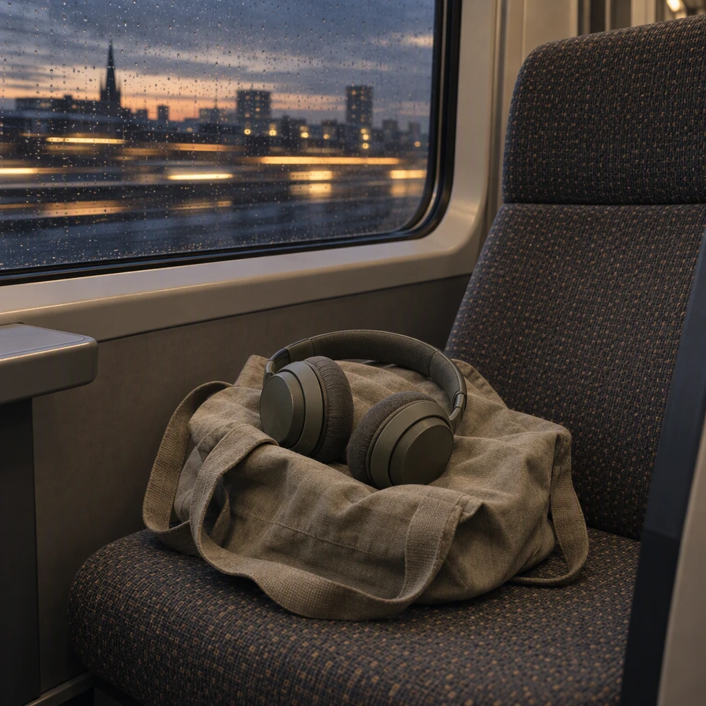
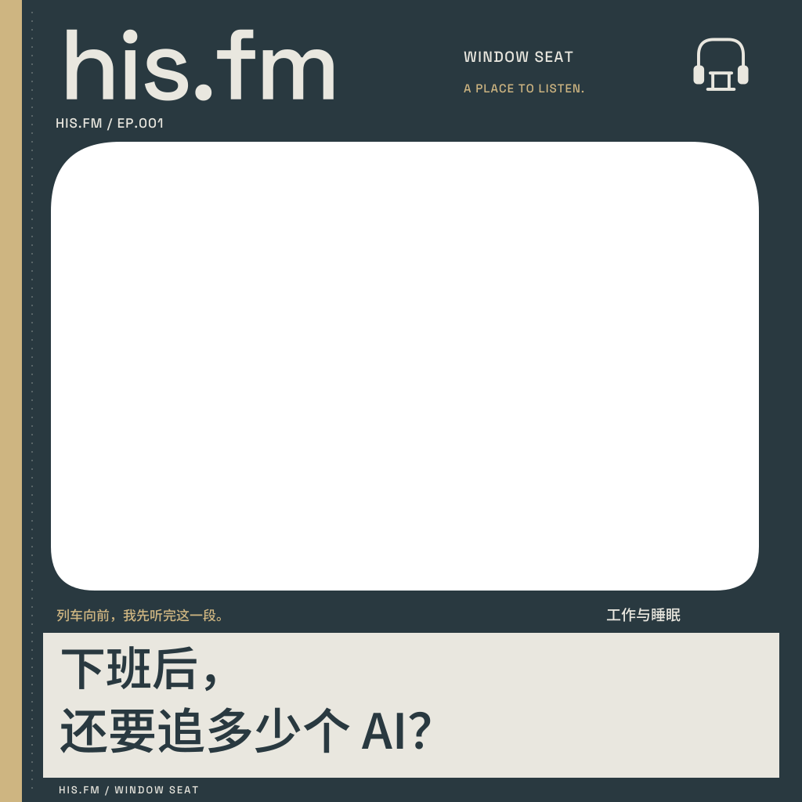
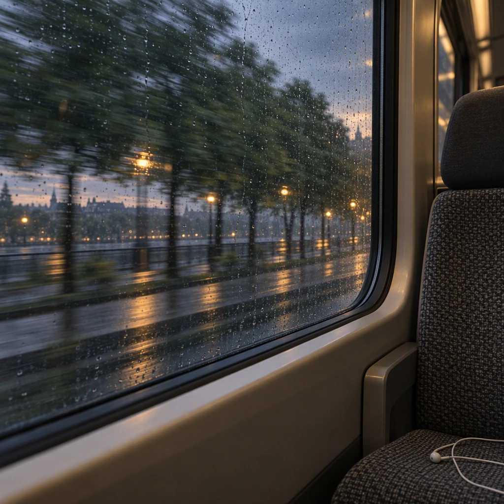
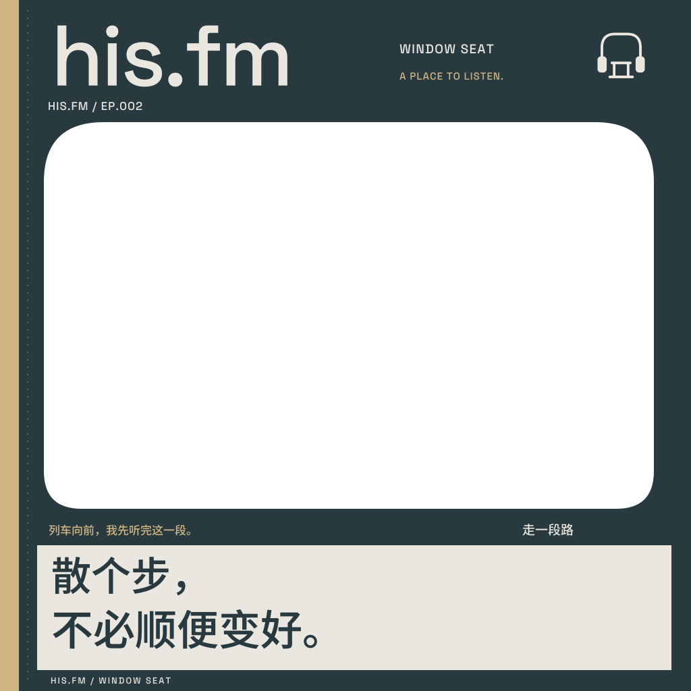
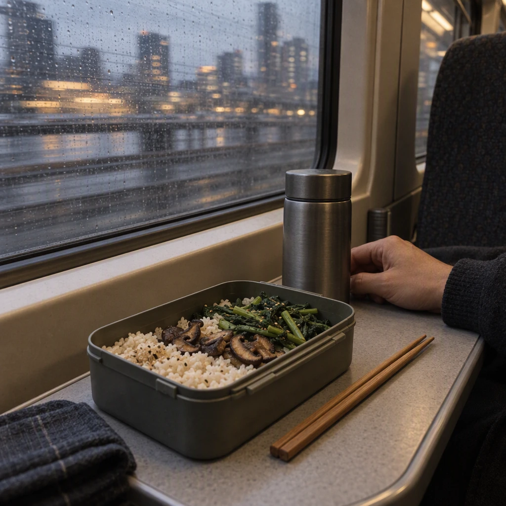
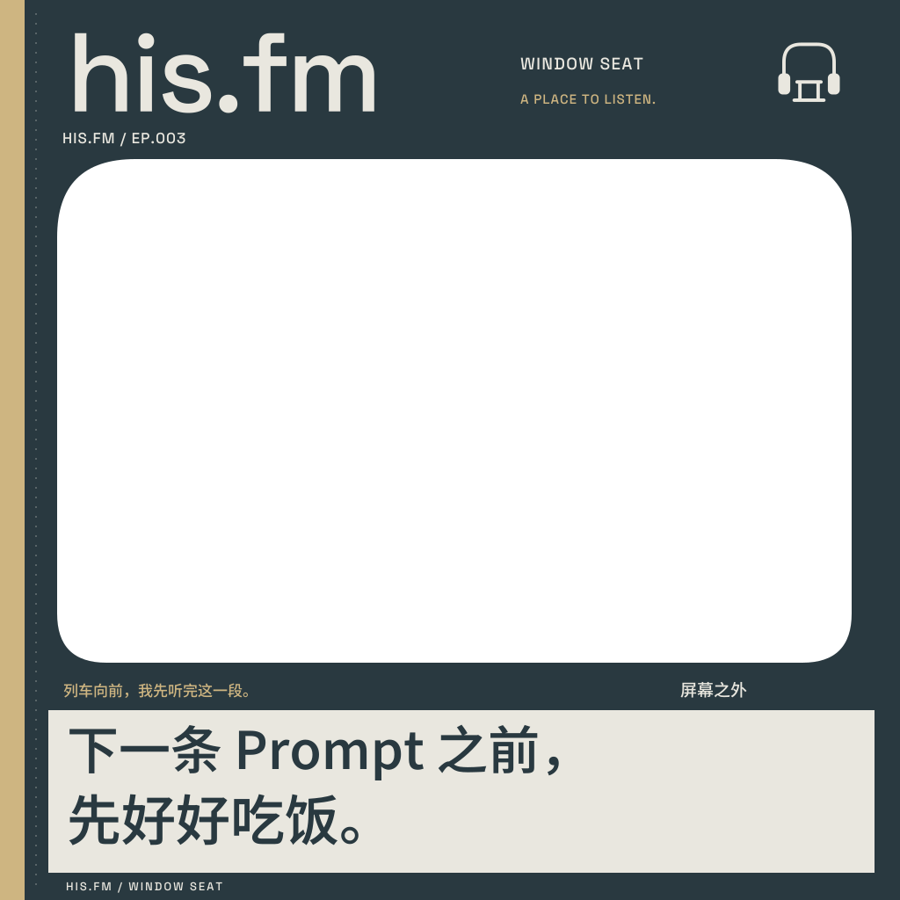

下班后，还要追多少个 AI？
十一点半，收藏夹又多了一条教程。聊聊睡眠、消息与那个总觉得自己还不够努力的晚上。
EP.001阅读文稿 ↗
THE EPISODE INDEX / 节目目录
有空时打开。听到哪儿，就到哪儿。
3 个文稿与选题预览

十一点半，收藏夹又多了一条教程。聊聊睡眠、消息与那个总觉得自己还不够努力的晚上。


路线不用记录，耳机可以摘掉。去看看路边的树，是不是已经换了一点颜色。


电脑合上了，脑子还在继续运行。关于一顿不看屏幕的晚饭，和今天结束工作的那个动作。
没有找到这个标题。换个词试试。
音频仍在准备，先把已经写下的内容放在这里。